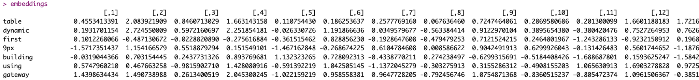
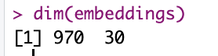
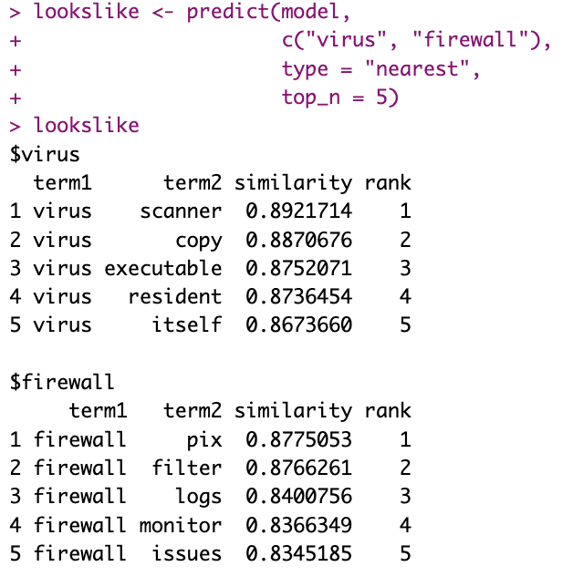
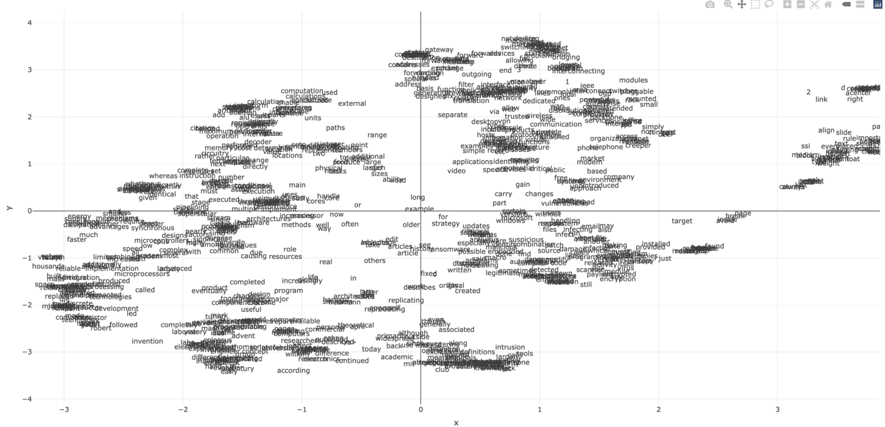
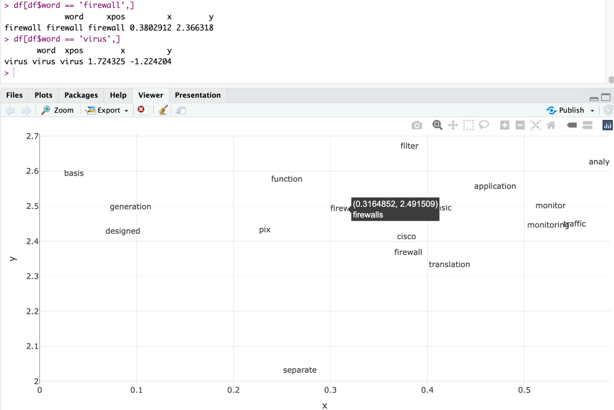
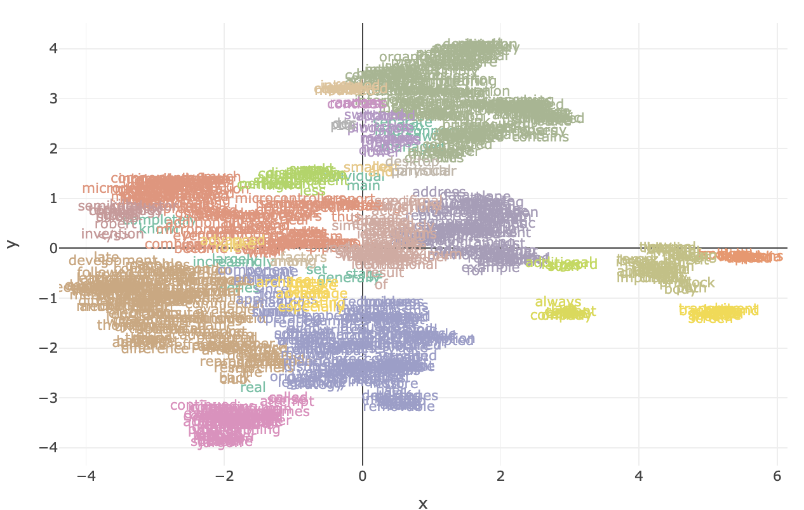
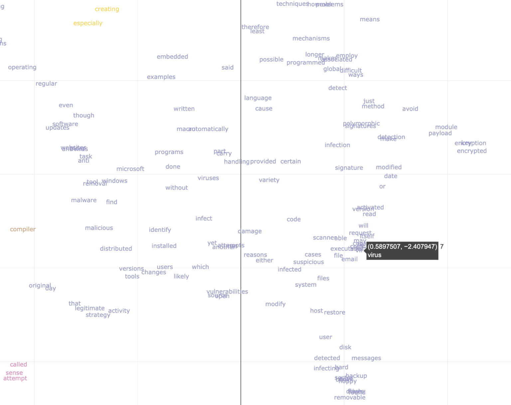
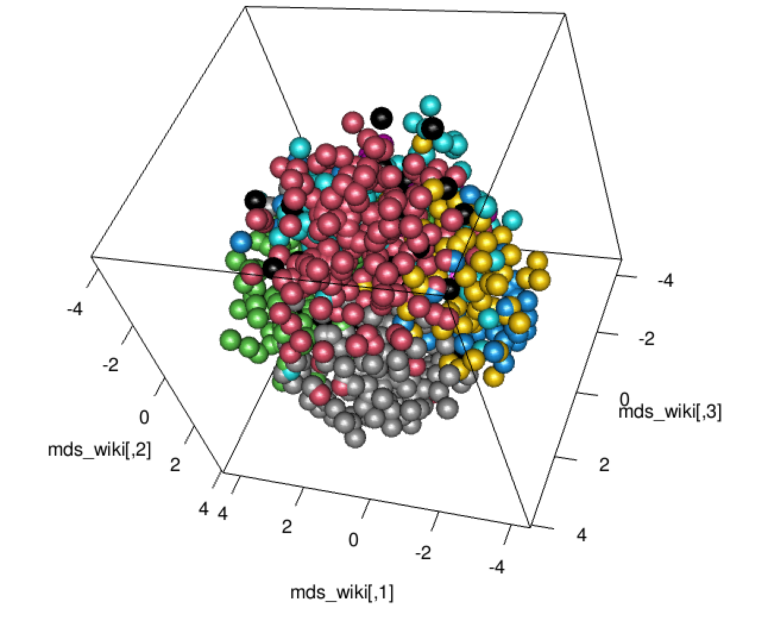

Continuing on text for Cybersecurity ML
I discussed an unsupervised clustering algorithm, DBScan. We used multi-dimensional points (coordinates) in space. But what if our data is text? That’s common in “general”, but also in Cybersecurity. So the question becomes: Can we treat “text” as points on which to apply such (or similar) algorithms?
Enters the concept of embedding.

Conceptual understanding
Once again, who am I to “teach” you what an embedding is, hu? It’s probably better to go to the definition, which hopefully, thanks to the context provided in the last entry, can help intuit where we’re going with all this:
“In natural language processing, a word embedding is a representation of a word. The embedding is used in text analysis. Typically, the representation is a real-valued vector that encodes the meaning of the word in such a way that the words that are closer in the vector space are expected to be similar in meaning.”
So two things: Today is actually about Natural Language Processing, or NLP in short. Not a new topic in this Blog, but hey.
Second, we’re looking for a representation of a word as a “real-valued vector”. So think of it like so: A “vector” can represent many things, but today we’re going to consider it a set of coordinates.
So in 3 dimensions (3D), a word embedding would represent a word as 3 numbers, representing each a coordinate of the (x, y, z) space. Sounds familiar? Check again the entry on Clustering if not, please, it makes more sense to consider both entries together…
You’re back?
OK. For very large text, maybe the information of a word with only 3 dimensions is not enough to “encode” its relationship to other words. So you would go into higher dimensions, say 15, 30 or 1000 dimensions (again, why not? You and I can’t visualize 30 dimensions in our heads, but it’s easy for a computer… Fun, ain’t it?)
And so with a set of vectors, each representing a word, we get in fact a set of points in an N-dimensional space. And then…
Why not use algorithms on these “embeddings”, say the DBScan algorithm?
In practice: Embedding from text(s)
We’re not going to discuss the current algorithms for embeddings in detail. They use… Neural Networks, of all things. The general accepted version of Word2Vec for instance in essence takes pairs of words (out of “training text”) and transforms the “words” into vectors of 300 dimensions (if I remember correctly). Better even, you can get the embeddings, so you need not train anything yourself (thanks Google AI!).
But for today, we might just want to go ahead and actually train our own embeddings. Let’s go for it!
By the way: Here the code for today.
Now one important concept for Machine Learning: “Garbage IN? Garbage OUT!” So IF I use cra*py (pardon my french) text as input, I shouldn’t expect much of a result as an output.
Let’s say I consider the Wikipedia to hold “good” text about some IT and Cybersecurity concepts. If so, I could use for instance the R Package wikipediR. (At least that’s the one I used for today)
library(WikipediR) # Get Wiki data
## Simple wrapper
my_page_content <- function(keywords) {
page_content(language = "en",
project = "wikipedia",
page_name = keywords,
as_wikitext = FALSE,
clean_response = TRUE) |>
clean_text_set()
}
## Explicitly for explanation:
firewall_wiki <- my_page_content("firewall (computing)")
firewall_wiki <- firewall_wiki[1:82]
switch_wiki <- my_page_content("network switch")
switch_wiki <- switch_wiki[2:96]And it goes on, with a few other keywords of interest (say “router”, “hacker”…). You have the details of this example in the code.
Why I filter and keep only 82 paragraphs of the Firewall entry? Just a matter of cleaner stuff, the way I parse the Wiki entries (which is detailed in “clean_text_set()” function), some lines contain a bit of only pairs of words, others a few references with proper Names, etc. Consider this a manual process in this case because I’m lazy. In the real world, I would look for the key words that mark the section of the Wiki Entry that do not interest me, and keep the ones above that only. And clean those. Like it or not, in this case, I needed to extract meaningful sentences of some HTML pages. It requires a bit of work (my “cleant_text_set()” function, created for today’s exercise specifically, hopefully can show how one has to work, it’s not always as simple as running a function call…). All in all, after pre-processing, I’ll end up with 692 sentences. In traditional ML, a good part of the work is about getting the right data in the right format. And that’s all I say about that today. Moving on.
The next step will be to use our data. Here I’m not going to implement anything myself, it’s beyond my point. Suffice to say I’m going to use the “Continuous Bag of Words”, that looks at words AROUND one word to assign positions in space. In concept and simplifying a lot, we’re seeing if “block” and “firewall” appear in the training text near one another more often than “restaurant” and “firewall”. (I’d guess that’s about right :D)
Now we can use R to train our own Word2Vec Neural Network, with Bag Of Words, on our sample text (692 small blocks of text) and ask it to come up with vectors of 30 dimensions as embeddings for the main keywords found in the text.
## Lets' move on to something more... Substantial:
full_text <- c(
switch_wiki,
router_wiki,
firewall_wiki,
hacker_wiki,
computer_wiki,
cpu_wiki,
virus_wiki
)
model <- word2vec(full_text, type="cbow", dim=30, iter = 50)
embeddings <- as.matrix(model)
embeddingsAnd yes, it requires a few things (the “word2vec” R package, for one), a bit of understanding (or trial and error, but understanding is better!). But if all goes as planned you’ll get something like this:


So 970 words have been transformed into their corresponding 30-dimensional vectors! Good!
30 dimensions is going to be hard to “look at”, but let’s do it anyway. What we really want is to understand the similarity of things here. So for instance, FROM OUR SELECTED WIKI text (very small sample, if you ask me, and yet…):

Now I wouldn’t necessarily agree that “pix” is the best nearest word for “firewall” but… That’s what our sample text says, it would seem. Anyhow, it doesn’t sound completely crazy either. (e.g. “Restaurant”, had it been in the sample text, hopefully wouldn’t appear in the top 5 “nearest” terms for Firewall…)
30 dimensions is going to be hard to “look at”, but let’s do it anyway. What we really want is to understand the similarity of things here. So for instance, FROM OUR SELECTED WIKI text (very small sample, if you ask me, and yet…):
Now I wouldn’t necessarily agree that “pix” is the best nearest word for “firewall” but… That’s what our sample text says, it would seem. Anyhow, it doesn’t sound completely crazy either. (e.g. “Restaurant”, had it been in the sample text, hopefully wouldn’t appear in the top 5 “nearest” terms for Firewall…)
Going 2D and hint for the future
I’m going to finish this with one visualization, and then hopefully everything will come together. Now I’ll say this first: I know you can bring 30 dimensions into 2, yes. I was going to try “multi-dimensional scaling” (as PCA is probably too lossy for such a reduction), or look into some algorithm for that. But then I came across examples here, and heck, dimensionality reduction was beyond the point for today, and so I skipped doing it myself. (To this day, I haven’t looked at how the umap() function works. I know, shame on me.)
But here is the key of all the conversation for today:

We’ve done it! We have visualized our words, not without first creating embeddings for them, and then projecting into 2 Dimensions.
And let’s have a look at what is where…
Not bad, “firewalls” is near “firewall” (pfiu!). So are filter, traffic… And maybe the rest is not great, but that’s what we came up with from (again) very little sample text.
Mixing things up!
Last week, I published a (simplistic) entry about DBScan as an algorithm to cluster things. WHY NOT apply that here?!

Could we have a look at one cluster, maybe one that contains the word “Virus”?

Things like “infection”, “executable”, “scanner”, “malicious” are all in the area… And with the same color!
With more text and better cleanup… I’m convinced the approach has its merits 🙂
As per 3D visuals, this time using Multi-dimensional Scaling (another algorithm that uses distances!) to project onto 3 dimensions, well it works, but there is a bit too much data, and maybe it’s not super super useful… Still:

Applications
What if instead of Wiki entries from the internet, we had taken CVE text (maybe along with their CVSS (or whatever scoring system you prefer))? We could probably do some sort of regression once we encode the text (maybe even mixing things up with other algorithms) and maybe estimate the score?
How about classifying threat alerts into groups?
What if we had taken logs from a machine. Could we maybe use all this and find specially anomalous logs, from the complete log file? (Imagine thousands of lines reviewed in seconds by your laptop like so…)
And consider this: Over this and the last Blog entry, we’ve discussed enough to do some basic ML. But there is much more than Clustering applied to text. I just hope this helps give a hint of the possibilities. 🙂
Conclusion
At this stage, I truly hope we understand what it means for us to be able to put words (or texts, they could be each files… why not!) into vectors (i.e. points in N-dimensional space), to be projected (or not) and for which distances can be calculated to other words/texts.
With that, we open a world of possibilities: Topic Modelling, Sentiment Analysis, etc. can all be done using distances between points 🙂 (There is more to NLP, though, and NOT only LLMs, please. More simple/traditional stuff is out there! One example I wrote about forever ago was part of speech tagging, for instance. Another time I used TF-IDF to model a classifier of log files with supervised learning…) Maybe in a future post I’ll discuss more of these concepts, but I’d be very happy for now if somehow I helped someone out there understand a bit better how these things could actually work.
By the by: GenAI essentially does self-supervised learning on word embeddings. (WOW! What a bomb to leave at the end of a blog entry, “self-supervised”???).
Bonus: A word about GenAI
OK, OK, OK… But real quick then.
First: I don’t particularly like GenAI as a topic because – mostly – of the hype, misunderstanding, risks… but otherwise is undoubtedly incredibly powerful and I’ll admit it must have some cool applications… For expert users! And although very slowly, I myself am considering using it as an assistant R-coder… I have done tests and it’s not bad at all, and it WOULD make me much faster… But I’m mostly resisting for now: Coding and thinking how to approach a problem is what I like, so why externalize that… Unless I really HAVE to…
That said… What the heck is “self-supervised” learning?
Supervised learning needs to have a means of knowing whether it’s doing a good job to rectify its own behaviour while in training.
If your job is to predict the best next word for a given text… All you need is to try to predict it, and then read the next word (or “token”). If you guessed wrong, you rectify your behaviour for your next guess. Then you read the next word… And iterate. And in the above scenario, nobody needs to “tag” anything, the information is self-contained! So you just ingest text one “token” at a time (don’t worry, say “one word at a time”, and more or less you’re good). All you need is text (and “attention”, but that’s WAY beyond today’s objectives :D).
The more text, the more training examples you get 🙂
And yes: Your words/tokens, are presented to your GenAI (well, LLMs, really) as… Embbedings.